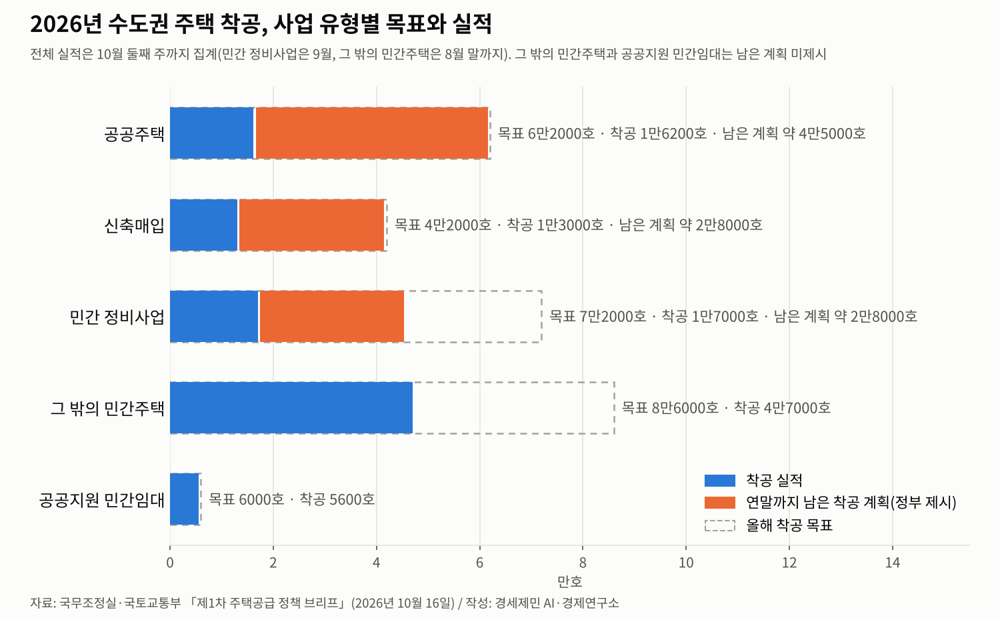
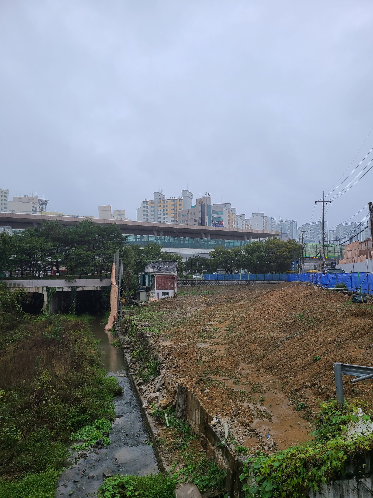
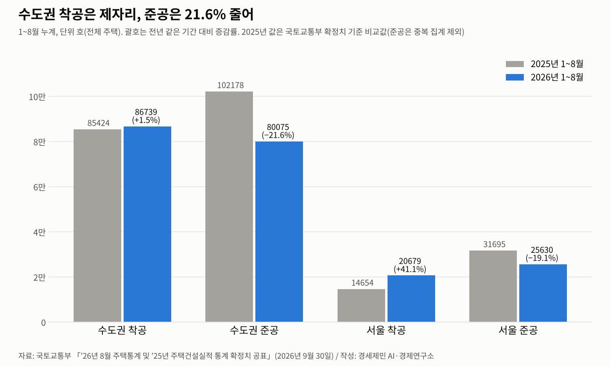
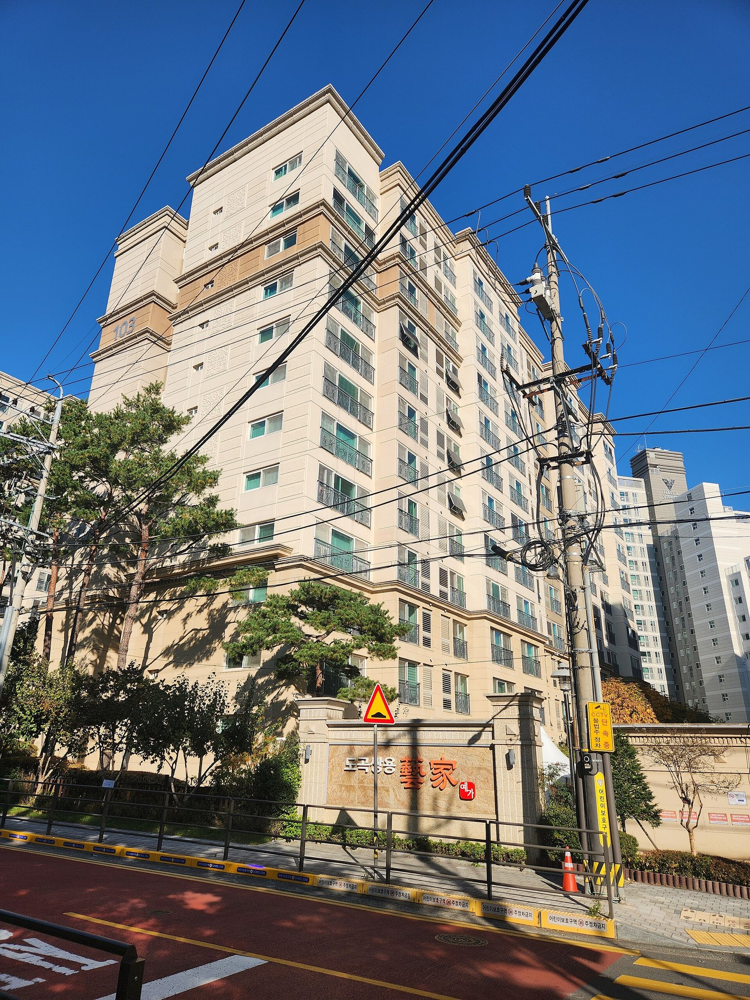

[주택공급 브리핑①] 수도권 착공 목표 26만8000호, 정부 전망도 최대 5만호 미달
정부 집계로 9만9000호 넘게 착공, 올해 목표의 37%
남은 계획대로면 공공은 목표 근접, 민간 정비사업은 63%에 그쳐
수도권 아파트 입주 올해 10만5000호 예상, 10년 평균 18만호의 58%
AI경제저널=김갑봉 기자 | 정부 집계로 올해 수도권 주택 착공이 9만9000호를 넘었다. 공공은 10월 둘째 주, 민간은 8~9월까지 센 값이다. 정부가 세운 올해 목표 26만8000호의 37%다. 정부는 연말 착공을 21만8000~23만5000호 이상으로 내다봤다. 전망대로면 목표보다 3만3000~5만호 적다.
국무조정실과 국토교통부가 10월 16일 처음 연 주택공급 정례브리핑에서 내놓은 숫자다. 계획 대신 실제 착공과 분양, 입주 실적을 한 달에 두 번 공개하겠다며 시작한 자리다. 다음 브리핑은 10월 말이다.
브리핑 엿새 뒤 나온 한국부동산원 조사에서 서울 아파트값은 또 올랐다. 정부 계획대로면 공공은 목표에 다가서고 민간은 처진다. 착공이 입주로 이어지기까지는 몇 해가 걸린다. 정부 통계로 착공과 입주를 함께 짚는다.
목표의 37%, 연말 전망은 81~88%
정부는 2026~2030년 수도권에서 150만호 넘게 착공하겠다는 계획을 세웠다. 한 해 평균 29만8000호다. 정부는 이를 역대 정부 가운데 최대 수준이라고 설명한다. 2025년 9월 7일, 2026년 1월 29일과 8월 13일 세 차례 공급대책을 거쳐 나온 목표다.
정부 자료는 수도권 착공을 정부별로 견줬다. 노무현 정부 18만1000호, 이명박 정부 15만5000호, 박근혜 정부 29만5000호, 문재인 정부 28만3000호, 윤석열 정부 15만8000호다. 현 정부 값은 계획이고 앞선 정부 값은 실적이다.
올해 목표 26만8000호는 지난해 수도권 착공 확정치 16만7000호보다 10만1000호 많다. 한 해 만에 착공을 60% 늘려야 닿는 목표다(연구소 계산). 주택통계 확정치와 정부 목표의 집계 범위가 같은지는 정부가 밝히지 않았다.
분기별 착공은 1분기 2만호, 2분기 4만5000호, 3분기 3만2000호 이상이었다. 연말 전망 하단에 닿으려면 11만9000호를 더 착공해야 한다. 이는 정부가 집계한 1~3분기 착공을 모두 더한 9만7000호 남짓보다 많다.
다만 이 숫자에는 시차가 섞여 있다. 정부는 전체 실적을 10월 둘째 주까지 셌지만 민간은 정비사업 9월, 그 밖의 민간주택 8월 말까지만 넣었다. 분기 값의 집계 기준일은 정부 자료에 없다.
민간 정비사업의 10월분과 그 밖의 민간주택 9~10월분은 아직 실적에 들어가지 않았다. 남은 물량이 모두 두 달 남짓 안에 착공돼야 하는 것은 아니다. 그래도 올해 목표의 성패는 4분기에 갈린다.

공공은 목표 근접, 민간 정비사업은 계획대로 해도 63%
공공주택은 목표 6만2000호 가운데 1만6200호를 착공해 26%를 채웠다. 3기 신도시가 7300호다. 고양창릉과 인천계양이 2300호씩, 하남교산과 남양주왕숙2가 1100호씩, 부천대장이 600호다. 지구별 값은 반올림 값이라 더하면 합계와 조금 다르다.
신축매입은 한국토지주택공사(LH) 같은 공공이 민간과 미리 약정을 맺고 새로 짓는 집을 사들이는 방식이다. 목표 4만2000호 가운데 1만3000호로 31%다. 착공에 앞서는 매입약정 접수는 4~7월 월평균 1만1000건에서 8~9월 1만8000건으로 61% 늘었다.
민간 정비사업은 목표 7만2000호 가운데 9월까지 1만7000호를 착공해 23.6%에 그쳤다. 흑석11구역 1500호, 중계본동 3100호, 신림2구역 1400호가 들어 있다. 그 밖의 민간주택은 8월까지 목표 8만6000호의 54.7%인 4만7000호다.
공공지원 민간임대는 목표 6000호 가운데 5600호를 착공했다. 남은 착공 계획은 공공주택 약 4만5000호, 신축매입 약 2만8000호, 민간 정비사업 약 2만8000호다. 이대로 착공되면 공공주택은 6만1200호, 신축매입은 4만1000호로 목표에 거의 닿는다.
민간 정비사업은 남은 계획을 다 채워도 4만5000호로 목표의 63%다. 연말 부족분 3만3000~5만호는 대부분 민간에서 생긴다는 계산이 나온다(연구소 계산). 공공은 정부가 일정을 직접 쥔다. 민간은 공사비와 금융 여건에 더 크게 흔들린다(연구소 판단).
정부는 서울 정비사업 물량은 대부분 달성할 수 있다고 본다. 그렇다면 빈자리는 주로 경기에 생긴다(연구소 해석). 민간 정비사업 착공은 9월까지 서울 1만1000호, 경기 4000호, 인천 2000호다. 주택 전체로 1~8월 경기 착공은 23.9% 줄었고 인천은 152% 늘었다.

홍지선 국토교통부 장관은 10월 7일 국정감사에서 목표를 100% 채우기는 어렵다며 80~88% 달성을 내다봤다. 23일 국회 국토교통위원회 종합감사에서는 공공은 어느 정도 달성할 수 있지만 민간이 부진하다며 내년에 만회하겠다고 답했다.
국민의힘 정희용 의원은 같은 종합감사에서 연말 전망이 목표의 81~88%에 그친다고 비판했다. 그러면서 정부에 공급 계획 이행을 촉구하고, 청년과 서민의 주거 사다리를 지킬 계획을 세우라고 요구했다.
착공은 제자리, 아파트 입주는 10년 평균의 58%
국토교통부 주택통계로 보면 올해 1~8월 수도권 착공은 8만6739호다. 1년 전보다 1.5% 늘었다. 서울은 2만679호, 인천은 1만7515호, 경기는 4만8545호다. 같은 기간 수도권 준공은 8만75호로 21.6% 줄었고 서울은 2만5630호로 19.1% 줄었다.
비교 기준도 바뀌었다. 지난해 9월 잠정 발표 때 2025년 1~8월 수도권 준공은 12만6618호였다. 국토교통부는 중복 집계를 없앤 확정치 기준으로 같은 기간 값을 10만2178호로 고쳐 견줬다. 옛 발표값과 견주면 감소폭이 36.8%로 부풀려진다. 올해 값도 잠정치다.
수도권 아파트 입주는 2024년부터 줄고 있다. 국토교통부 10월 18일 자료를 보면 2023년 20만4000호, 2024년 17만3000호, 2025년 13만호다. 정부는 올해 입주를 10만5000호로 내다본다. 10년 평균 18만호의 58%다.
한국주택금융공사 강영신 연구원의 보고서를 보면 공동주택은 인허가부터 입주까지 3~5년이 걸린다. 선분양 아파트는 착공 뒤 2~3년 공사를 거쳐 준공한다. 정부도 지금 입주가 적은 것을 과거 인허가와 착공이 부진했던 결과로 본다.
서울 선행지표는 갈렸다. 국토교통부 10월 18일 자료에서 3~8월 서울 인허가는 3만6000호로 74% 늘어 10년 평균 2만8000호를 넘었다. 착공은 1만7000호로 45% 늘었지만 10년 평균 3만1000호의 절반 남짓이다.
정부는 3기 신도시 입주가 올해 1300호에서 2028년 1만호 이상으로 늘어 2028년부터 수급 여건이 크게 나아진다고 본다. 홍 장관은 23일 국감에서 최근 3년간 인허가와 착공이 줄어든 영향이 작년과 올해 나타나고 있다고 설명했다.

서울 아파트값 상승 지속, 월세 비중 68.5%
한국부동산원 10월 셋째 주(19일 기준) 조사에서 서울 아파트 매매가격은 한 주 새 0.13% 올랐다. 언론 집계로 89주 연속 상승이고 역대 가장 긴 기록이다. 수도권은 0.16%, 국내 전체는 0.08% 올랐다. 서울 아파트 전세가격은 0.16% 올랐다.

서울 안에서도 흐름이 갈렸다. 한강 이북 자치구 14곳은 0.26% 올랐다. 한강 이남 자치구 11곳은 0.02% 오르는 데 그쳤다. 서초구는 0.32%, 강남구는 0.31% 내렸다. 경기는 0.21% 올라 서울보다 오름폭이 컸다.
임대차 시장은 월세로 기울었다. 국토교통부 집계로 1~8월 국내 전체 주택 전월세 거래 가운데 월세(보증부월세와 반전세 등 포함) 비중은 68.5%다. 수도권은 67.2%, 서울은 69.9%다. 국내 전체 비중은 2022년 같은 기간 51.6%에서 해마다 높아졌다.
한국건설산업연구원의 3분기 부동산시장동향 보고서를 보면 8월 한 달 새 수도권 아파트 전세가격은 0.78%, 월세가격은 0.68% 올랐다. 보고서는 수도권 중심 가격 상승과 높은 월세 비중을 임대차 시장 핵심 흐름으로 꼽았다.
더불어민주당 정일영 의원은 23일 종합감사에서 민간임대사업자 규제와 실거주 요건 강화로 전세가 월세로 바뀐다며 부작용이 크다고 지적했다. 홍 장관은 지적한 사항도 일부 원인으로 본다며 무겁게 받아들인다고 답했다. 다만 근본 대책은 신규 공급이라고 했다.
정부는 전월세 매물 감소의 주원인을 입주 물량 급감으로 본다. 10월 18일 자료는 민간 집계를 인용했다. 아파트 전월세 매물은 10월 둘째 주 기준 1년 전보다 서울 12%, 지방 4대 광역시 33% 줄었다. 정부는 토지거래허가구역만의 일이 아니라고 설명했다.

연말에 몰린 7만3000호, 입주 10만호의 45%는 전세임대
첫째는 연말 몰림이다. 남은 물량 가운데 공공주택과 신축매입 7만3000호는 두 달 남짓 안에 착공해야 한다. 연말에 착공이 몰린 사업장은 일정이 몇 주만 밀려도 착공이 해를 넘길 수 있다(연구소 판단). 정부는 남은 물량의 공정을 밀착 관리하겠다고 밝혔다.
둘째는 공사비와 금융이다. 한국건설산업연구원 월간 건설시장동향을 보면 8월 건설공사비지수는 138.7로 1년 전보다 6.0% 올랐다. 같은 달 건설기성(경상 금액)은 1년 전보다 7.4% 늘었지만 주거용 건축기성은 4조9000억원으로 2.7% 줄었다.
금융위원회와 금융감독원은 주거용 프로젝트파이낸싱(PF) 사업장 300여곳에 밀착관리 담당자를 두었다. 정부는 국토교통부와 금융당국의 애로 해소 창구를 연내 통합 주택공급 지원센터로 합칠 계획이다.
셋째는 입주 10만호의 구성이다. 정부는 내년 말까지 수도권 공적주택 약 10만호를 입주시키겠다고 했다. 전세임대 4만5000호, 매입임대 2만9000호, 공공분양 9000호, 건설임대 8000호, 공공지원 민간임대 5000호 등이다. 다섯 유형을 더하면 9만6000호다.
정부는 10만호를 단기 공급 확대 수단으로 내놨다. 가장 큰 몫은 전세임대다. 공공이 기존 주택을 전세로 얻어 다시 빌려주는 방식이다. 새 주택 재고를 늘리지는 않는다(연구소 판단). 매입임대에서 신축과 기존 주택 비율은 정부 자료에 없다.
매입임대는 입주로 이어지는지도 변수다. 국토교통부 10월 23일 설명자료를 보면 매입임대의 모집 규모 대비 계약자 비율은 올해 8월 기준 64.4%다. 2022~2025년 80~92%보다 낮다. 정부는 입주자를 고르는 중인 주택까지 공실로 셈한 탓이라며 연말에는 오를 것으로 본다.
정부 쪽 근거도 있다. 정부는 공공 부문을 중심으로 착공이 급감 전인 2021년 수준으로 돌아오고 있다고 본다. 서울 인허가와 매입약정 같은 선행지표도 좋아졌다. 정부는 8·13 대책 세부과제 145건 가운데 48건을 마쳤다고 밝혔다.
물어야 할 것
경세제민 AI·경제연구소는 국무조정실과 국토교통부에 묻는다. 정례브리핑에서 공공과 민간 실적의 집계 기준일을 맞춰 공개하는지 묻는다. 지금처럼 기준일이 다르면 착공 속도를 제대로 읽기 어렵다.
연말 전망 21만8000호와 23만5000호를 가르는 사업장이 어디인지도 묻는다. 정부는 10월 말 2차 브리핑에서 사업장별 실적을 내놓고, 4분기에 국토교통부 누리집에 상황판 1단계를 만들어 시범 운영한다고 밝혔다. 남은 사업장별 착공 예정 시점까지 공개하는지 묻는다.
입주 10만호를 새로 지은 집과 기존 주택을 빌린 몫으로 나눠 공표하는지도 묻는다. 9월 발의된 개발부담금 한시 감면 법안과 도시정비법 개정안이 착공을 얼마나 앞당길지 추정치를 내놓을 계획이 있는지도 묻는다.
확인하지 못한 것
정부별 수도권 착공은 정부 자료 각주에 숫자만 실렸다. 현 정부 값이 한 해 평균 29만8000호로 적혀 연평균으로 읽었다. 집계 기간은 설명이 없다. 수도권 아파트 입주 연도별 값도 10월 18일 자료에 원출처가 없다.
2절의 민간 정비사업 63%와 부족분이 대부분 민간에서 생긴다는 계산은 정부가 밝힌 남은 계획대로 착공된다고 가정한 연구소 계산이다. 그 밖의 민간주택은 정부가 남은 계획을 내놓지 않았다. 빈자리가 주로 경기에 생긴다는 대목은 연구소 해석이다.
한국부동산원 보도자료에는 연속 상승 주수가 없다. 89주는 한국경제를 비롯한 언론 집계다. 10월 18일 자료의 전월세 매물 수는 민간 자료를 인용한 값이다.
홍 장관 23일 발언은 세계일보와 아주경제로, 정희용 의원 발언 요지는 세계일보와 한국금융신문으로 대조했고, 주거 사다리 대목은 세계일보에서만 확인했다. 두 의원 발언은 요지로 옮겼다. 국회 회의록은 열지 못했다.
국감에서 나온 미착공 PF 사업장 위험노출액과 연체율, 서울 정비사업의 시공사 선정부터 착공까지 걸리는 기간은 보도 한 곳에서만 확인돼 쓰지 않았다. 8·13 대책 과제가 착공에 미친 효과를 따로 계산한 정부 자료도 찾지 못했다.
보도마다 다른 값
수도권 착공 실적이 8만6739호와 9만9000호로 갈린다. 앞은 국토교통부 주택통계의 1~8월 누계다. 뒤는 정례브리핑 값으로 공공은 10월 둘째 주, 민간은 8~9월까지 셌다.
보도마다 호와 가구를 섞어 쓴다. 정부 자료는 호를 쓴다. 서울 1~8월 착공 2만1000호와 41%는 정례브리핑의 반올림 값이고, 주택통계로는 2만679호와 41.1%다. 정부가 말하는 착공에는 신축매입과 공공지원 민간임대가 함께 들어 있다.
매입약정 증가율은 정책 브리프 61%(8~9월 월평균, 4~7월 대비), 전월세 과제 자료 63%(8월, 수도권)로 다르다. 1만1000건과 1만8000건으로 다시 계산하면 64% 남짓이다. 두 자료는 비교 기간과 범위가 다르다.
착공 달성 전망은 홍 장관 10월 7일 발언이 80~88%, 10월 16일 정책 브리프가 81~88%다. 신축매입 착공 목표는 정책 브리프가 4만2000호, 전월세 과제 자료가 공공매입임대 기준 4만호로 적었다. 본문은 정책 브리프 값을 썼다.
월세 비중은 국토교통부 1~8월 누계 68.5%와 한국건설산업연구원 보고서의 7월 한 달 67.6%가 기준이 다르다. 본문은 국토교통부 누계값을 썼다.
참고문헌
- 국무조정실 주택신속공급점검팀·국토교통부 주택공급정책과, 「“내 집 어디에, 언제 공급되나” 주택공급, 계획부터 성과까지 정례적으로 공개합니다」(별첨 「제1차 주택공급 정책 브리프」 「전월세시장 안정과제 추진상황」), 2026년 10월 16일, KDI 경제교육·정보센터 게재, https://eiec.kdi.re.kr/policy/materialView.do?num=288200
- 국토교통부 주택정책과, 「강남 3구 중심 서울 집값 상승률 둔화, 공급 확대 등 시장안정 기반 강화에 총력」(보도참고자료), 2026년 10월 18일, https://www.molit.go.kr/USR/NEWS/m_72/dtl.jsp?lcmspage=1&id=95092502
- 국토교통부 주거복지지원과, 「매입임대 주택이 실수요자에게 공급될 수 있도록 공실관리 등 적극 노력 중입니다」(보도설명자료), 2026년 10월 23일, https://www.molit.go.kr/USR/NEWS/m_72/dtl.jsp?lcmspage=1&id=95092520
- 국토교통부 주택정책과, 「정부는 주택건설실적 통계의 정확도 제고를 위해 통계 생산 및 공표방식을 ’25.9월 기개선하였습니다」(보도설명자료), 2026년 9월 30일, https://www.molit.go.kr/USR/NEWS/m_72/dtl.jsp?lcmspage=1&id=95092475
- 국토교통부 주택정책과, 「’26년 8월 주택통계 및 ’25년 주택건설실적 통계 확정치 공표」, 2026년 9월 30일, KDI 경제교육·정보센터 게재, https://eiec.kdi.re.kr/policy/materialView.do?num=287561
- 국토교통부 주택정책과, 「주택건설실적 정확도 제고를 위한 공표방식 개편 및 ’25년 8월 주택통계 공표」, 2025년 9월 30일, KDI 경제교육·정보센터 게재, https://eiec.kdi.re.kr/policy/materialView.do?num=271796
- 한국부동산원, 「2026년 10월 19일 기준 주간아파트가격 동향」, 2026년 10월 22일, 부동산통계정보시스템 보도자료 게시판(분류 주간아파트가격동향조사), https://www.reb.or.kr/r-one/portal/bbs/pres/searchBulletinPage.do
- 김성환, 「2026년 3분기 부동산시장동향」, 한국건설산업연구원, 2026년 9월 21일, https://www.cerik.re.kr/material/prospect/3131
- 이지혜, 「2026년 10월 월간건설시장동향」, 한국건설산업연구원, 2026년 10월 14일, https://www.cerik.re.kr/material/prospect/3136
- 강영신, 「주택 시장을 보여주는 단계별 공급 지표」, 『2024 주택금융 리서치』, 한국주택금융공사, 2024년, https://researcher.hf.go.kr/researcher/sub02/sub02_07.do?mode=download&articleNo=592310&attachNo=90958
- 이한얼, "[2026 국감] 홍지선 「올해 수도권 주택 착공 목표 100% 어려워」…공급 차질 인정(종합)", 아이뉴스24, 2026년 10월 7일, https://www.inews24.com/view/2012838
- 이승주, "국토부, 국감서 주택공급 차질·전월세난 뭇매…홍지선 「내년 만회할 것」", 세계일보, 2026년 10월 23일, https://www.segye.com/newsView/20261023509422
- 장선아, "[2026 국정감사] 홍지선 장관 「전월세난 근본 원인은 공급 부족…실거주 규제도 일부 영향」", 아주경제, 2026년 10월 23일, https://www.ajunews.com/view/20261023104514568
- 이슬기, "서울 아파트값 89주 연속 상승 「역대 최장」…외곽이 더 올랐다", 한국경제, 2026년 10월 22일, https://www.hankyung.com/article/2026102284116
[사진·도표 출처]
- [사진1] H. Y. Shin, 「Dogok-ri, Wabu-eup 20211010 150606.jpg」, 2021년 10월 10일, 위키미디어 공용, CC0 1.0. https://commons.wikimedia.org/wiki/File:Dogok-ri,_Wabu-eup_20211010_150606.jpg
- [사진2] 서울특별시 노원구, 「Panoramic view of Nowon-gu, Seoul.jpg」, 2016년 1월 14일 게시, 위키미디어 공용, 공공누리 제1유형(출처 표시). https://commons.wikimedia.org/wiki/File:Panoramic_view_of_Nowon-gu,_Seoul.jpg
- [사진3] Seojoohyun, 「도곡쌍용예가아파트.jpg」, 2025년 11월 3일, 위키미디어 공용, CC0 1.0. https://commons.wikimedia.org/wiki/File:도곡쌍용예가아파트.jpg
- [도표1] 경세제민 AI·경제연구소 작성, 자료 국무조정실·국토교통부 「제1차 주택공급 정책 브리프」(2026년 10월 16일)
- [도표2] 경세제민 AI·경제연구소 작성, 자료 국토교통부 「’26년 8월 주택통계 및 ’25년 주택건설실적 통계 확정치 공표」(2026년 9월 30일)
※ 이 기사는 AI 프로그램 클로드를 활용해 작성했습니다.
관련기사
- [도시계획·부동산] 인천 재개발 14곳 원문을 열었다, 9곳이 에너지 성능으로 용적률을 샀다
- [한국경제 8대 불편한 진실②] 인구 줄어도 집값은 오른다, 도쿄와 서울이 보여 준 것
- [한국경제 8대 불편한 진실⑤] 자영업자 빚 1095조원, 혼자 일하는 사장이 늘었다
- [거시경제] 이윤은 18.5% 늘고 임금은 1.9% 늘었다
저작권자 © AI경제저널 무단전재 및 재배포, AI학습 및 활용 금지